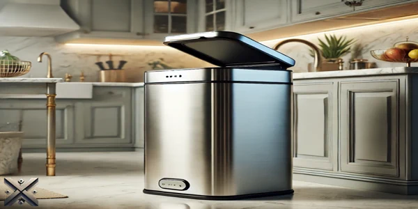
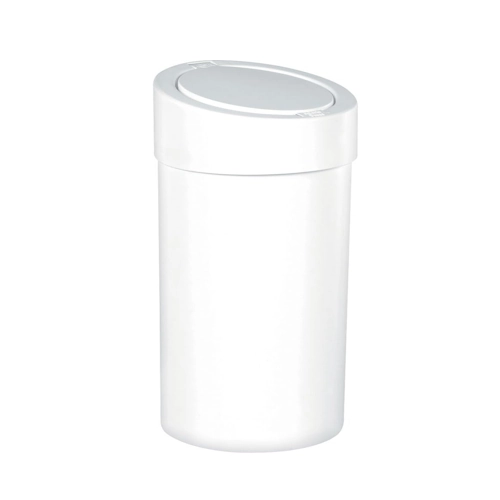
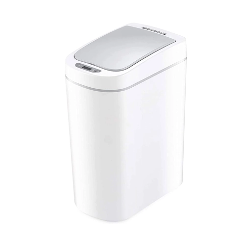
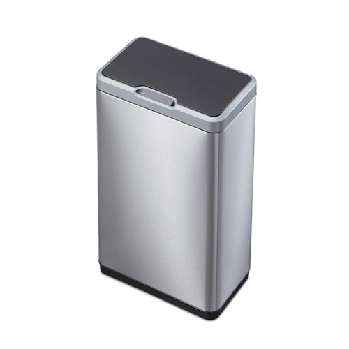
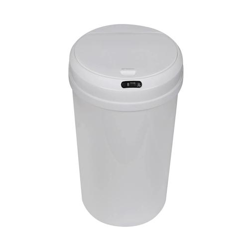
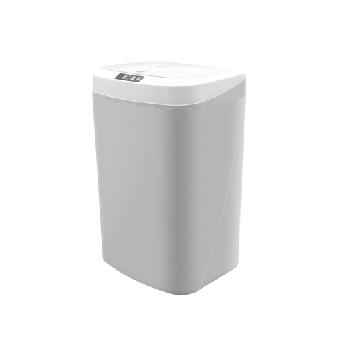

Se você busca manter seu ambiente limpo de forma prática e tecnológica, está no lugar certo! Selecionamos as cinco melhores lixeiras automáticas do mercado em 2025, incluindo opções econômicas e modelos de maior capacidade.
Com design moderno, essas lixeiras se adaptam a diferentes ambientes, unindo funcionalidade e estética. Além disso, esses dispositivos modernos ajudam a reduzir o desperdício de sacolas plásticas, pois muitos modelos contam com sistemas inteligentes de compactação de lixo, prolongando a necessidade de troca do saco.

As lixeiras automáticas estão se tornando cada vez mais populares devido à sua praticidade e ao alto nível de higiene que proporcionam. Elas possuem sensores de movimento que permitem a abertura e o fechamento da tampa sem a necessidade de contato físico, reduzindo a propagação de germes e bactérias. Esse recurso é especialmente útil em ambientes como cozinhas, banheiros e hospitais, onde a higiene é essencial.
Os modelos automáticos eliminam o contato direto com a lixeira, reduzindo a propagação de germes e odores. Além disso, a tecnologia avançada oferece recursos como detecção de presença, vedação contra odores e economia de energia. Muitas dessas lixeiras possuem baterias recarregáveis ou funcionam com energia solar, garantindo eficiência energética e sustentabilidade.
Outro ponto positivo é a adaptação ao ambiente, pois os sensores podem ser configurados para diferentes níveis de sensibilidade, evitando aberturas indesejadas. Dessa forma, a lixeira se torna uma peça essencial para a higiene doméstica e a organização do espaço, tornando-se um investimento inteligente para quem busca mais praticidade no dia a dia. Em resumo, as lixeiras automáticas são uma excelente opção para quem busca mais higiene, conforto e tecnologia no descarte de resíduos. Com diversas opções no mercado, é possível encontrar um modelo que atenda às necessidades de cada ambiente, tornando a rotina mais prática e higiênica.

Para quem deseja uma lixeira automática acessível, a Coza é uma excelente escolha. Com sistema de abertura ao toque, sua tampa permanece levantada enquanto você descarta os resíduos. Seu design foi projetado para esconder o saco de lixo de até 9 litros, mantendo a estética do ambiente impecável. Além disso, seu material de alta qualidade garante resistência e durabilidade, tornando-a uma ótima opção para banheiros, escritórios e pequenas cozinhas. Seu funcionamento simples e eficiente faz com que seja um dos modelos mais procurados por quem busca tecnologia sem gastar muito. Faixa de preço: R$ 47.

Se você precisa de uma lixeira automática de 7 litros, esse modelo é ideal. Equipada com sensor de movimento infravermelho à prova de respingos, requer 2 pilhas AA. Evita aberturas desnecessárias causadas por pets ou crianças ou pessoas que estejam andando. Sua tampa vedada impede a dispersão de odores, enquanto o anel removível mantém o saco de lixo firme. Outro diferencial desse modelo é a economia de energia, pois seu sensor de detecção inteligente reduz o consumo da bateria, aumentando sua vida útil. O design compacto permite que ela seja colocada em pequenos espaços sem comprometer a funcionalidade. Faixa de preço: R$ 192.

Com 50 litros de capacidade, essa lixeira automática conta com sensor infravermelho para abertura sem toque ao detectar movimentos em até 25 cm. Seu revestimento resistente a impressões digitais mantém um visual sempre limpo. O design curvado permite maior armazenamento, e seu fechamento suave adiciona um toque sofisticado. Além disso, seu grande espaço interno a torna ideal para cozinhas e escritórios movimentados, reduzindo a necessidade de trocas frequentes do saco de lixo. Seu sensor é altamente responsivo, garantindo uma experiência de uso prática e higiênica. Funciona com seis pilhas AA. Faixa de preço: R$ 837.

Essa lixeira automática de 12 litros é alimentada por uma bateria de lítio recarregável via USB. Fabricada em ABS brilhante, combina resistência e elegância. Com três modos de abertura – sensor de proximidade, toque leve com o pé e botão –, proporciona máxima conveniência. Além disso, sua bateria recarregável elimina a necessidade de trocas constantes, sendo uma opção mais sustentável e econômica a longo prazo. Seu design minimalista e moderno faz com que ela se adapte perfeitamente a qualquer ambiente, seja um banheiro, cozinha ou escritório. Faixa de preço: R$ 175.

Considerada a melhor lixeira automática do mercado em 2025, a Coibeu possui 16 litros de capacidade e sensor 3D de última geração, detectando movimentos em um alcance de 30 cm. Oferece três modos de abertura: sensor, toque e manual, graças à tecnologia de amortecimento de ar, a abertura e fechamento da tampa ocorrem de forma suave e silenciosa, proporcionando uma experiência agradável e sem ruídos. Seu design moderno e resistente a impactos a torna ideal para qualquer ambiente. Além disso, sua vedação eficiente impede a propagação de odores desagradáveis, garantindo um ambiente mais higiênico. O tempo de resposta do sensor é extremamente rápido, tornando o descarte de lixo uma tarefa mais prática e limpa. Faixa de preço: R$ 169.
Deixe seu comentário e compartilhe este artigo com quem também busca mais praticidade e higiene no descarte de resíduos!
As lixeiras automáticas são mais do que um simples acessório doméstico – elas representam um estilo de vida moderno e eficiente. Escolher a ideal significa investir em tecnologia, conforto e bem-estar. Pense nas funcionalidades que mais fazem sentido para você: sensores inteligentes, vedação contra odores, economia de energia ou até um design sofisticado que complemente a decoração do seu espaço.
Já testou alguma? Compartilhe sua experiência! Sua opinião pode ser o detalhe que falta para alguém tomar a melhor decisão.